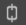
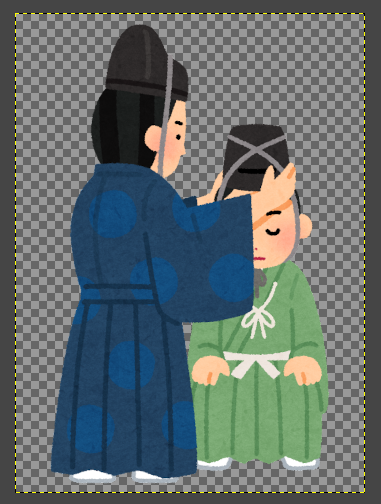
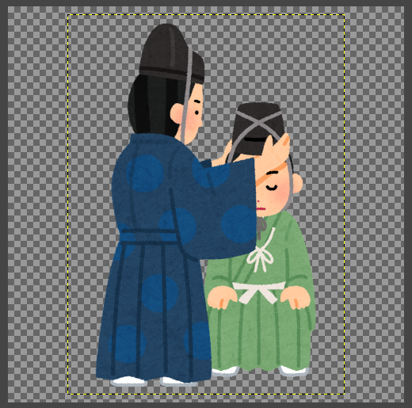
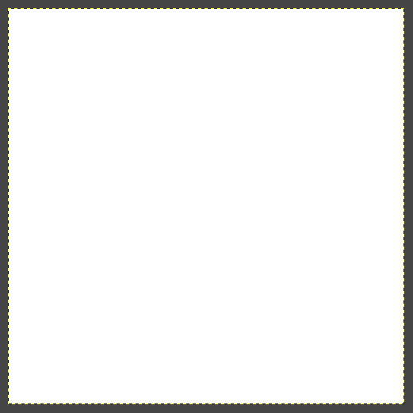

画像サイズを変更し、中央に配置する
大きめの画像を小さいサイズにします。 以下では、元のサイズを初期サイズ、変更後のサイズを目的サイズと呼びます。
画像の縮尺は縦横比固定とし、余った領域には白い背景色で余白を作るものとします。 余白を作ることで、目的サイズぎりぎりまで画像で埋め尽くしてしまい、窮屈な印象にならないようにします。 また、文字列の挿入等も容易になるようにしておきます。
Note
ここでは例として、初期サイズを 583×800 とし、目的サイズを 500×500 の正方形とします。

画像サイズの変更
画像は読み込んでおきます。
- メインメニューより、
画像>画像の拡大・縮小を選択 - ウィンドウ
画像の拡大・縮小で、キャンパスサイズ(画像サイズ)の幅と高さのうち、大きい方を目的サイズよりもやや小さい値に設定- ここでは
高さを480に
- ここでは
- ボタン
拡大・縮小を押下
画像の大きさが変更されます。
Warning
サイズを変更する際には、 キャンパスサイズ(画像サイズ) の チェーン  が外れていないことを確認し、縦横比が崩れないようにします。

キャンバスサイズの変更
キャンバスサイズを変更します。
- メインメニューより、
画像>キャンバスサイズの変更を選択 キャンバスサイズの幅と高さを目的サイズに設定- ここでは両方を
500に
- ここでは両方を
オフセット蘭で、ボタン中央を押下- ボタン
リサイズを押下
これで、キャンバスは目的サイズになります。 ただし、レイヤーは先に変更した画像サイズのまま、キャンバスの中央に配置されています。
Tip
レイヤーは点線で示された領域です。

新規レイヤーの追加
背景となる新しいレイヤーを追加します。
- メインメニューより、
レイヤー>新しいレイヤーを選択 レイヤー名を「背景」など適当な名称に変更モードを標準にする乗算になっていると透過状態からの塗りつぶしができない
塗りつぶし色を白にする- ボタン
OKを押下
一見、全面が白い画像になります。

レイヤー順序の変更
レイヤーの順序を入れ替えます。
- ドックのレイヤーダイアログで背景が後ろに来るように変更
完成です。